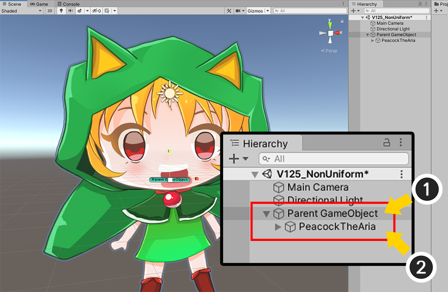
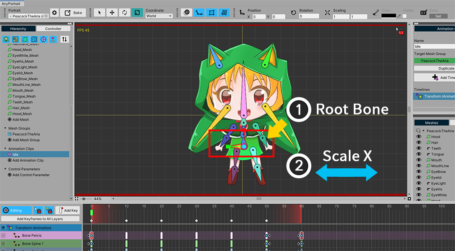
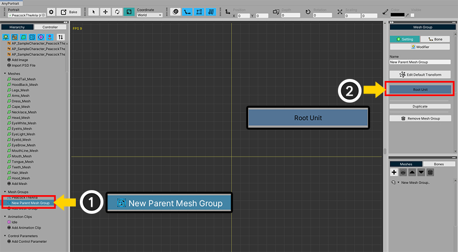
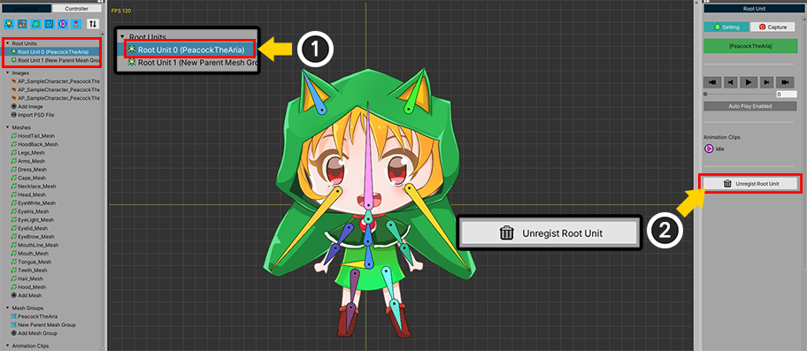
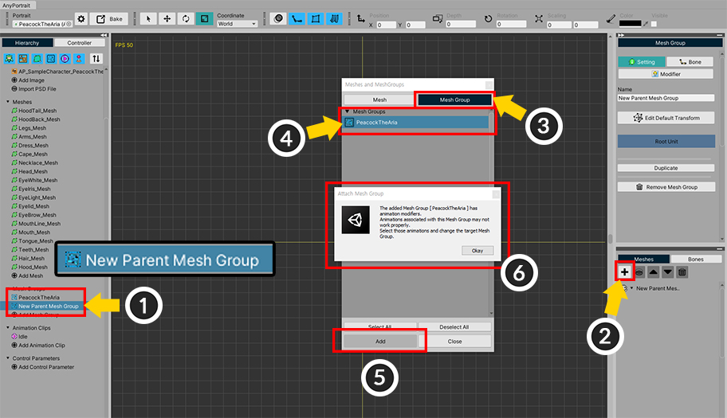
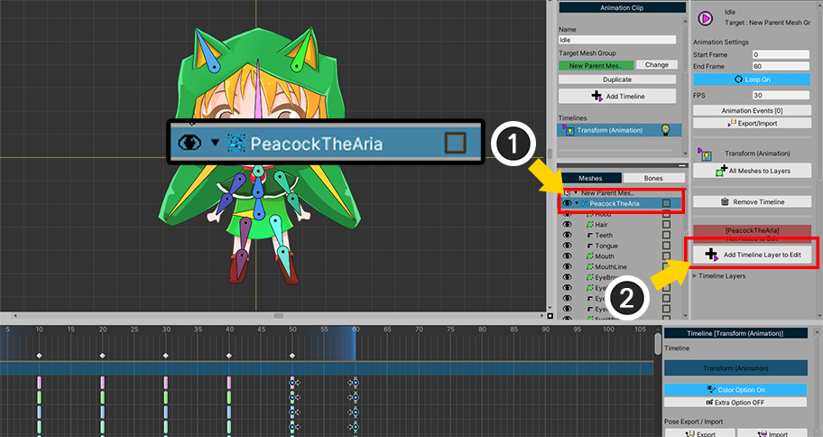
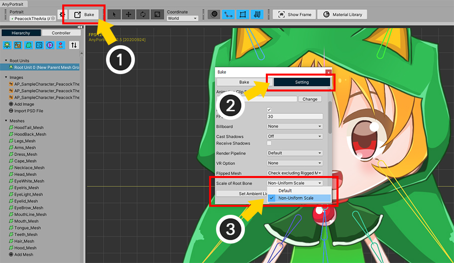
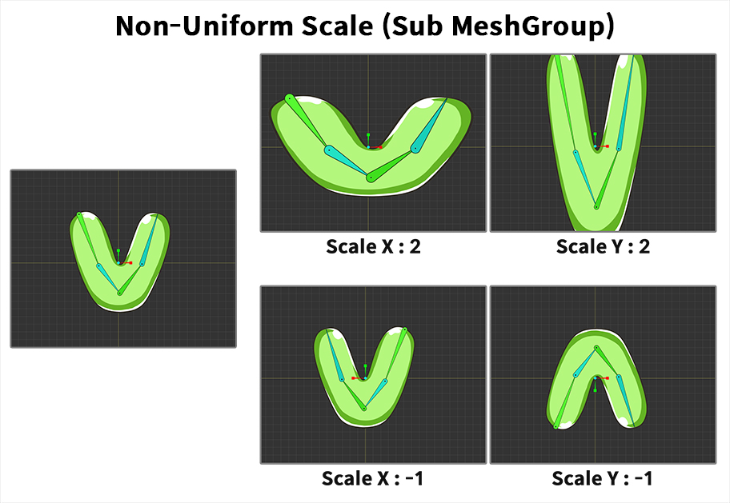

AnyPortrait > マニュアル > 「Non-Uniform Scale」オプション
「Non-Uniform Scale」オプション
1.2.5

上の画像のようにキャラクターのサイズをXやY軸に増やすことをするのは簡単に見えるが、意外にもこれAnyPortraitでサポートされていない機能です。
AnyPortraitのシステムで位置、回転、サイズ変換はUnityのそれと異なって設計した。
この方式は、一連のボーンのサイズが歪みされず、変更される利点がありますが、逆に上記のように、非均一サイズ変換をすることは制限が設けられています。
しかし、AnyPortrait v1.2.5に追加されたオプションにより制限たとえ均一でないサイズの変換が可能になりました。
このページでは、このオプションを含め、「ボーンにリギングされたキャラクター全体の大きさ」を変更する方法を説明します。
Unityでサイズを制御

これは、最も推奨される方法です。
(1) 「親になる空のGameObject」を作成します。
(2) AnyPortraitで製作されたキャラクターを (1) で作成した「GameObjectの子」に登録します。
後に「親になったGameObject」のTransformを制御して、位置、回転、サイズを変更します。
この方法は、最も信頼性が高く、特に「Mecanim」や「Timeline」と連動した場合に不可欠で適用する必要があります。
AnyPortrait内部でキャラクターのサイズを制御
次に、AnyPortraitを利用してキャラクターのサイズを変更する方法を学びましょう。
リギングが適用された場合には、全体のサイズを制御するために、「ルートボーン（Root Bone）」のサイズを調節することと思います。
この方法は、AnyPortraitではなく、他のエンジンやツールのほとんどに有効です。
「ルートボーン」の大きさを変えてみましょう。

上記キャラクターは1つの「ルートボーン」があります。
「ルートボーン」のXサイズを増加させてみましょう。

「ルートボーン」のXを増やすと、一般的に(1)の画像のような結果が出ることを期待します。
しかし、AnyPortraitは、基本的に次の理由(2)のような結果や、まったく異なる結果が表示されます。
結果が予想と異なる理由
1. ボーンのサイズは、「ローカル座標系」のみ動作します。
2. 子ボーンのサイズも「ローカル座標系」のみ変化がAnyPortraitの特徴です。したがって、親ボーンのサイズ増減方向と子ボーンの大きさの増減方向は、互いに独立しています。
特に、2の特徴は、親ボーンの大きさが不均一になっても、子ボーンの大きさが歪曲される現象を低減する利点があります。
しかし、一方で、上記のように、全体のサイズに歪みを与えようと場合には、問題になります。
「ルートボーン」の大きさを制御する方法が有効でない場合は、「子メッシュグループ」を別々に作って、この問題を解決を試みることができます。

既存のキャラクターが「子メッシュグループ」に含まれるように作られてみましょう。
(1) 「Add Mesh Groupボタン」を押して(2) 「新しい親メッシュグループ」を作成します。

(1) 新たに作成された親メッシュグループを選択します。
(2) 「ルートユニット」に設定します。

(1) 「前のキャラクターのルートユニット」を選択します。
(2) 「Unregist Root Unitボタン」を押して、ルートユニットをオフにします。
新しく作成された空のメッシュグループのみ1つのルートユニットとして登録された状態になります。

(1) 再度「親メッシュグループ」を選択します。
現在、このメッシュグループは、空の状態です。
既存のキャラクターを、このメッシュグループの子として登録してみましょう。
(2) 「+ボタン」を押します。
(3) 「Mesh Groupタブ」を選択します。
(4) 既存のキャラクターメッシュグループを選択します。
(5) 「Addボタン」を押して (6) 案内メッセージの「Okayボタン」を押します。

(1) 上の画像のように、従来のキャラクターが子メッシュグループに含まれていました。
既存のデータはほとんど正常に動作しますが、アニメは唯一の「ルートユニットとして登録されたメッシュグループ」のみ正常に動作します。
したがって、アニメーションに接続されたメッシュグループを変更する必要があります。
(2) アニメーションクリップを選択して、「Changeボタン」を押した後に、新しい親メッシュグループに接続情報を変更します。
（このプロセスの詳細説明は、関連ページを参照してください。）

キャラクターをメッシュグループの状態に制御することができるようになりました。
「Transform」または「Morph」タイプの「タイムラインのレイヤー」を選択した状態では、
(1) 既存のキャラクターである「子メッシュグループ」を選択します。
(2) 「タイムラインのレイヤー」に登録します。

(1) 「キーフレーム」を追加します。
(2) 「子メッシュグループ」の大きさをX軸に増加させてみましょう。
(3)のような結果が出てくることが予想したが、残念ながらやや奇妙な形で大きさが変わってしまいました。
さらに、上記のテストした 「ルートボーン」のサイズを変更していたこととも異なる結果です。
「子メッシュグループ」と「ルートボーン」の間でのサイズ変換方式がAnyPortraitのシステムがユーザの意図とは異なる動作するからです。
しかし、v1.2.5に追加されたオプションを使用して、この問題を解決することができます。

(1) 「設定ダイアログ」を開き、
(2) 「Portraitタブ」で、「Scale of Root Bone」の値を「Non-Uniform Scale」に変更します。

または、上記の方法でもオプションを変更することができます。
(1) 「Bakeダイアログ」を開き、(2) 「Settingタブ」を選択します。
(3) 同様に、「Scale of Root Bone」オプションを「Non-Uniform Scale」に変更します。

再度編集画面に戻ると、キャラクターのサイズが正常に動作することを見ることができます。

Bakeを実行して、ゲームで確認しても同じようにサイズが意図したとおりに変更されることを見ることができます。
注意
この説明では、既存のキャラクターを子メッシュグループに変換するプロセスを込めたが、
モディファイヤが親メッシュグループではなく、子メッシュグループに作成された状態はそのままなので、実際にこの方法は推奨されません。
代わりに、最初から「子メッシュグループ」をあらかじめ作成し、「親メッシュグループ」に「モディファイヤ」を生成して編集することが最も推奨される作業方法です。
「Non-Uniform Scale」オプションについて
上で紹介した「Non-Uniform Scale」オプションは、「子メッシュグループ」と「サブのルートボーン」との関係のみに適用されるオプションです。
このオプションは、既存のAnyPortraitのシステムとは異なり、非均一なサイズの変換を限定的に許可します。
その他の場合、すなわち、「ルートメッシュグループのルートパターン」や「ボーンがない子メッシュグループ」、または「リギングがされていないメッシュに」には適用されません。
従来の方式と「Non-Uniform Scale」方式の違いを以下のように比較してみました。

従来の方式です。
上の画像は、「ルートボーン」にサイズ変換を適用した状態です。
「ルートボーン」のX軸サイズが増加すると、全体的にX軸にサイズが増加するのではなく、ボーンの「厚さ」が増加します。
同じように、「ルートボーン」のY軸サイズが増加すると、ボーンの「長さ」が増加することが、このシステムの特徴です。
X軸やY軸にサイズを反転させると、「ルートボーン」の方向を基準に全体の大きさが反転します。

「Non-Uniform Scale」オプションをオンにして、ボーンがある「子メッシュグループ」のサイズを変更してみました。
「子メッシュグループ」のX軸サイズが増加すると、全体的にボーンとメッシュが「左右」で増え、
「子メッシュグループ」のY軸サイズが増加すると、全体的にボーンとメッシュが「上下」に増加します。
サイズを反転すると、「子メッシュグループ」に基づいて、X軸またはY軸にサイズが反転されて、意図した結果のとおり、レンダリングがされることを見ることができます。
「Non-Uniform Scale」オプションは、既存のサイズ変換に関するすべての問題を解決することができると思われるが、いくつかの問題点を持っているので、必要な場合にのみ、このオプションを使用する必要があります。
「Non-Uniform Scale」オプションの問題
AnyPortraitのシステムは、ゲームではボーンやメッシュをスクリプトやIKで直接制御する容易なように、これらのサイズの変化に大きく影響を受けないように設計されました。
逆に言えば、「Non-Uniform Scale」オプションは、次の機能と一緒に使用する場合に問題が発生します。
- 「スクリプト」で骨を制御する場合、通常、結果が演算されないことがあります。
- 「IK、Jiggle Bone」が予想と異なる結果を示すことができます。